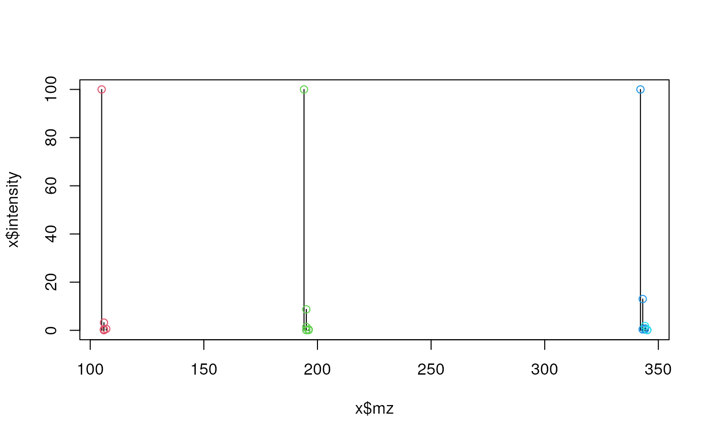

Given a spectrum (i.e. a peak matrix with m/z and intensity values)
the function identifies groups of potential isotopologue peaks based on
pre-defined mass differences and intensity (probability) ratios that need
to be passed to the function with the substDefinition parameter. Each
isotopic substitution in a compound determines a certain isotopologue and it
is associated with a certain mass difference of that with respect to the
monoisotopic isotopologue. Also each substitution in a compound is linked
to a certain ratio between the intensities of the peaks of the corresponding
isotopologue and the monoisotopic one. This ratio isn't the same for
isotopologues corresponding to the same isotopic substitution but to
different compounds. Through the substDefinition parameter we provide
upper and lower values to compute bounds for each isotopic substitution
dependent on the peak's mass.
Usage
isotopologues(
x,
substDefinition = isotopicSubstitutionMatrix(),
tolerance = 0,
ppm = 20,
seedMz = numeric(),
charge = 1,
.check = TRUE
)Arguments
- x
matrixordata.framewith spectrum data. The first column is expected to contain m/z and the second column intensity values. The m/z values in that matrix are expected to be increasingly ordered and noNAvalues should be present.- substDefinition
matrixordata.framewith definition of isotopic substitutions (columns"name"and"md"are among the mandatory columns). The rows in this matrix have to be ordered by columnmdin increasing order. SeeisotopicSubstitutionMatrix()for more information on the format and content.- tolerance
numeric(1)representing the absolute tolerance for the relaxed matching of m/z values of peaks. SeeMsCoreUtils::closest()for details.- ppm
numeric(1)representing a relative, value-specific parts-per-million (PPM) tolerance for the relaxed matching of m/z values of peaks. SeeMsCoreUtils::closest()for details.- seedMz
numericvector of ordered m/z values. If provided, the function checks if there are peaks inxwhich m/z match them. If any, it looks for groups where the first peak is one of the matched ones.- charge
numeric(1)representing the expected charge of the ionized compounds.- .check
logical(1)to disable input argument check. Should only be set toFALSEif provided m/z values are guaranteed to be increasingly ordered and don't containNAvalues.
Value
list of integer vectors. Each integer vector contains the
indixes of the rows in x with potential isotopologues of the same
compound.
Details
The function iterates over the peaks (rows) in x. For each peak (which is
assumed to be the monoisotopic peak) it searches other peaks in x with a
difference in mass matching (given ppm and tolerance) any of the
pre-defined mass differences in substDefinitions (column "md"). The mass
is obtained by multiplying the m/z of the peaks for the charge expected
for the ionized compounds.
For matching peaks, the function next evaluates whether their intensity is
within the expected (pre-defined) intensity range. Using "LBint",
"LBslope", "UBint", "UBslope" of the previously matched isotopic
substitution in substDefinition, the function estimates a (mass dependent)
lower and upper intensity ratio limit based on the peak's mass.
When some peaks are grouped together their indexes are excluded from the set of indexes that are searched for further groups (i.e. peaks already assigned to an isotopologue group are not considered/tested again thus each peak can only be part of one isotopologue group).
Examples
## Read theoretical isotope pattern (high resolution) from example file
x <- read.table(system.file("exampleSpectra",
"serine-alpha-lactose-caffeine.txt", package = "MetaboCoreUtils"),
header = TRUE)
x <- x[order(x$mz), ]
plot(x$mz, x$intensity, type = "h")
isos <- isotopologues(x, ppm = 5)
isos
#> [[1]]
#> [1] 1 2 3 4 5 6
#>
#> [[2]]
#> [1] 7 8 9 10 11 12 13 14
#>
#> [[3]]
#> [1] 15 16 17 18 20 21 24
#>
#> [[4]]
#> [1] 19 23
#>
## highlight them in the plot
for (i in seq_along(isos)) {
z <- isos[[i]]
points(x$mz[z], x$intensity[z], col = i + 1)
}
